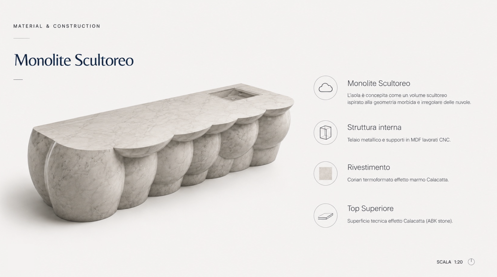
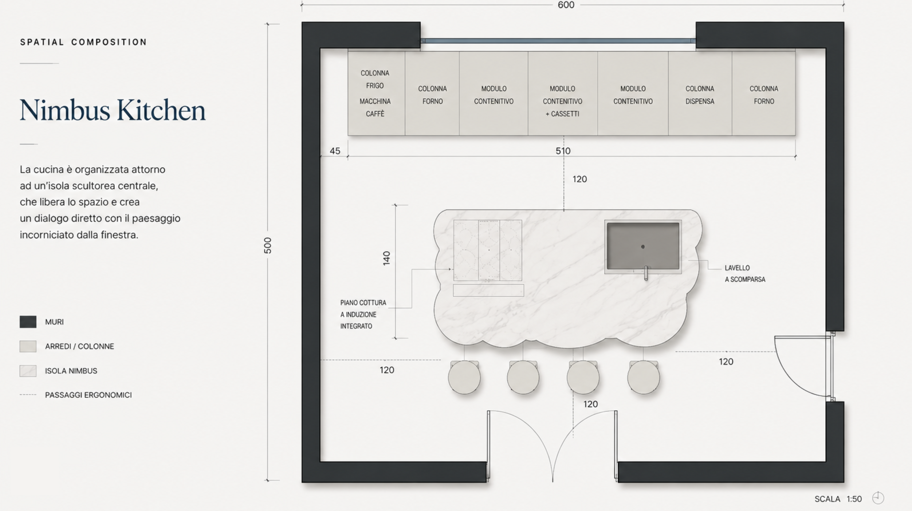

Nimbus Kitchen
Interior concept · Cucina residenziale · 2026
Una cucina costruita attorno a un unico gesto.
Nimbus Kitchen nasce dalla volontà di trasformare l’isola centrale nel vero cuore della casa. Non un semplice elemento funzionale, ma un volume scultoreo capace di organizzare lo spazio, definire i percorsi e creare un dialogo diretto con il paesaggio incorniciato dalla grande finestra.
Il progetto esplora il rapporto tra materia, luce e geometria attraverso un linguaggio contemporaneo: essenze scure, superfici continue e forme morbide ispirate alla geometria irregolare delle nuvole.
Gli elementi tecnici vengono integrati nella composizione, lasciando che la cucina sia percepita come un’architettura domestica continua, essenziale e fortemente riconoscibile.

Il monolite scultoreo
L’isola è concepita come un volume continuo, caratterizzato da una successione di forme arrotondate che alleggeriscono visivamente la massa e trasformano l’elemento tecnico in un oggetto scultoreo.
La geometria morbida richiama la forma delle nuvole e introduce un contrasto intenzionale con il rigore delle colonne a parete e delle superfici verticali.
- Struttura interna Telaio metallico e supporti in MDF lavorati CNC.
- Rivestimento Corian termoformato con finitura effetto Calacatta.
- Top superiore Superficie tecnica effetto marmo Calacatta.
- Funzioni integrate Piano cottura a induzione e lavello a scomparsa.
Organizzazione dello spazio
La cucina è organizzata intorno all’isola centrale, posizionata come fulcro operativo e conviviale dell’ambiente.
I passaggi ergonomici di 120 centimetri garantiscono fluidità nei movimenti e definiscono una relazione equilibrata tra preparazione, contenimento e convivialità.
Le colonne sono raccolte lungo la parete di fondo, lasciando libero il centro della stanza e rafforzando il rapporto visivo tra l’isola e la grande apertura panoramica.
